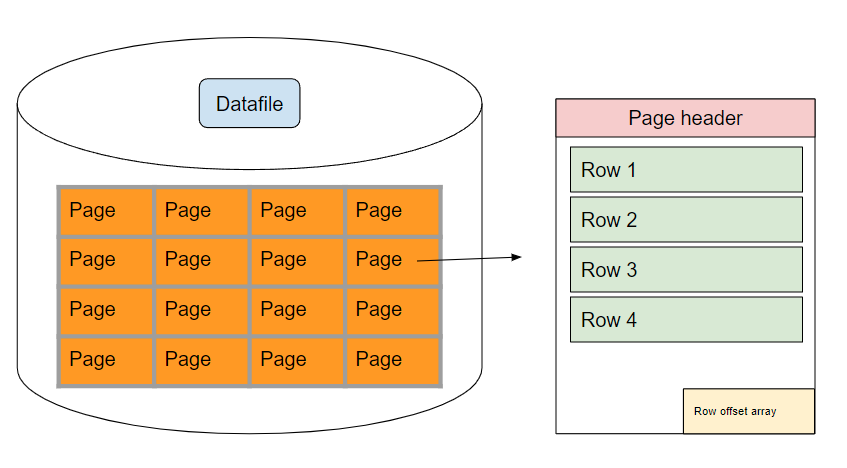
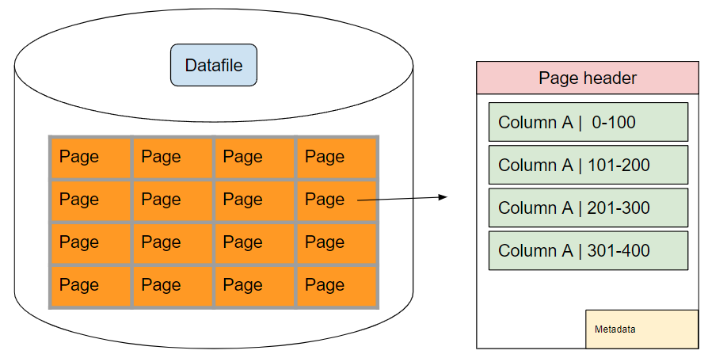
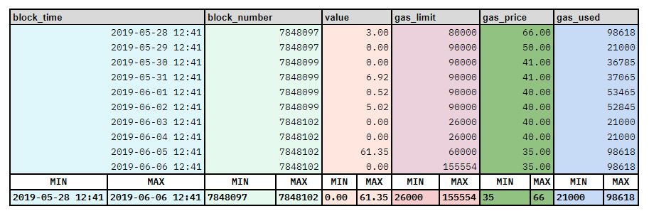

Query Engine
Welcome to DuneV2¶
DuneV2 changes our whole database architecture. We are transitioning away from a PostgreSQL database to an Instance of Apache Spark hosted on Databricks. The difference between the two systems can be summarized as follows:
- Instead of PostgreSQL, we will now use Databricks SQL. The change in SQL keywords is minimal but might be relevant for some of your querying habits.
- Spark is a column oriented database in contrast to PostgreSQL’s row oriented approach.
- traditional indexes are replaced by column chunk level
min/maxvalues
Note
Find a detailed wakthrough of the changes V2 brings to building Queries below. Or start getting your wand dirty by following along with @springzhang's Tips and Tricks for Dune V2 Queries and Visualizations
Databricks SQL <> PostgresSQL operator changes¶
The changes between the 2 coding languages syntax and the keyword operators are quite minimal, however there is some differences you should be mindful of:
| Description | DuneV1 | DuneV2 |
|---|---|---|
| bytea2numeric does not exist in Spark. | bytea2numeric(bytea) | bytea2numeric_v2(string) |
| 0 vs 1 based indexing | 1 indexed | 0 indexed |
| bytea vs string for address, tx hash, etc… |
|
|
| Addresses (strings) are lower case in dune v2 |
|
|
| Selecting keyword columns is is different | "from" |
`from` |
| Alias naming is different | as "daily active users" |
as `daily active user` |
| Exponentiation notation | x/10^y |
x*power(10,y) or x*1e*y |
| Interval arguments need a space in between the number and time units | Interval '1day' |
Interval '1 day' |
| Generate_series () is now sequence () | generate_series('2022-05-15', CURRENT_DATE, '1 day') |
explode(sequence(to_date('2022-01-01'), to_date('2022-02-01'), interval 1 day)) |
| Decimals are no longer in prices.usd | Don’t use |
Replace by blockchain.erc20_tokens.decimals |
| Define NULL array | NULL::integer[] |
CAST(NULL AS ARRAY<int>)) |
| encoding strings to hex | encode(string, 'hex') |
hex(string) |
Get json object |
|
|
Using double quotes is not recommended in DuneV2, even when the engine can run the query and does not return an error.
This is because the parser sometimes treats words in double quotes as a string and sometimes it treats them as an object (column name for example).
For example, referencing a column name in the where clause using double quotes works as expected. However, the same query inside a CTE treats the column name as a string, as can be seen here.
If you have found any other changes that are important to note, please feel free to submit a PR to our docs or leave us feedback in our #general-feedback Discord channel!
When googling for SQL questions, instead of googling PGSQL median, you should now google for Databricks SQL median. Databricks has a well documented index of built in functions on their website.
Changes in how the database works¶
How does a database work?¶
On a very high level, databases read data from storage into memory in order to return your Query results. A database is often times limited by the speed of the database being able to read data into it's memory. This is a classic computer science problem that's commonly referred to as being I/O bound.
Row oriented database¶
Databases store their data in pages. Pages traditionally contain rows of information. Multiple pages will make up one data file. A table in a database will sometimes consist of multiple data files.

When retrieving data from the database, the database will read data into memory/cache in the size of pages. This is the smallest amount of data the database will read at once and is a common bottleneck while reading data from any database. After reading the data into memory, the database will either create temporary files or is able to read the data from memory again to finally arrive at the desired Query output.
In any database system, we want to reduce the amount of pages we read when retrieving any amount of data from the database. Since traditional databases store rows in one page, they are best suited for retrieving all columns of one row in a Query. The database will always have to read the entire page in which a specific row is stored, therefore it is quite simple for the database to return the data also stored in this same page. The same is true for querying for rows which are stored closely together in the database. So querying for rows 500-600 is very efficient, querying for rows 5, 87, 789 and 1050 is not really all that efficient, but still alright.
In contrast, querying for data which is stored in many different logical rows and therefore different pages is a hugely expensive operation. Most of the Queries we run on Dune today are aggregation of data points in a column over thousands if not millions of rows. In these cases, the database will read the entire pages in which this column data is stored, even though it only needs the data of one column. This means that on average, we are reading large amounts of data that is not needed to return the Query results, just because it is also contained on a page and the database is not able to read "just" the one column, but has to read the entire row in which the column is contained.
In PostgreSQL, we can use indexes to not force the database to read through the entire table (and therefore a lot of pages), but rather only look at a structured subset. This will lead to very fast and efficient Queries, but is limited to the columns which are indexed. Since every new index that is created for a specific table will be a new file in the database and make it harder to update and maintain that table, this is not a sustainable approach to scale a database.
We can't possibly create an index on every column or combination of columns in our database without running into trouble down the line. Therefore, Dune V2 will not run on row-oriented database, but rather on a column-oriented database.
Column oriented database¶
Instead of storing rows in pages, we store columns in pages. In this way, we reduce the amount of pages the database needs to read while aggregating or reading through a specific column.

Specifically, in Dune V2 we are using the parquet file format for our new database. Parquet is sometimes described as a hybrid approach between row-oriented databases and column-oriented databases since a table in the database will still consist of multiple parquet files which are partitioned by rows of the dataset. Inside of the parquet file the pages which actually contain the data will contain columns instead of rows, but are still stored within row groups which further partition the data by rows. The database is still roughly stored in a row oriented format, but the individual values are stored on pages in column orientation.

This means, that even though the database at large is somewhat oriented in a row oriented manner, should we actually want to read data, we will always read from a page which is column oriented. In this way, we can easily aggregate data in one column over a large amounts of logical rows, as in this layout the amount of pages we have to load into memory to actually read the data is minimized.
In contrast, should we try to query for all columns of specific logical rows, we have to access lots of different pages as the data of one logical row is no longer stored in one page, but rather distributed across lots of different pages.
This video does a pretty good job of explaining the differences in row vs column oriented database systems.
In essence, storing columns in pages instead of rows minimizes the amount of not needed data that is read by the database when retrieving data for one column over a large amount of logical rows. We were sometimes able to mimic this in PostgreSQL by creating large amounts of structured subset data in the form of indexes, but this doesn't scale.
Indexes or rather no Indexes¶
Indexes don't exist in a traditional sense in a parquet based system. However, they are basically created on the fly with each parquet file having a footer that contains min/max values for every column stored in that parquet file. This pattern is then repeated on a column chunk level, which stores this metadata for the columns within a specific row group within the parquet file.

Using these min/max values, both on a file level and on a column chunk level, allows the database to efficiently skip over entire parquet files or column chunks within parquet files while scanning through the table.
Unfortunately, the min/max values of strings are often times not very useful. Especially tx_hash strings and address strings in blockchain systems are not suited well for this kind of min/max data gathering since they are randomly generated. That means the database won't be able to skip files or column chunks based on these strings and Queries will therefore be quite inefficient since it requires the database to actually load all the pages into memory.
That said, since the Query engine at large is still able to read through individual columns in which these strings are stored very efficiently, most of the time this won't make a big difference in your Query execution speed.
This is mostly relevant for base tables like ethereum.transactions, bnb.logs, erc20_ethereum.erc20_evt_transfer, etc. which contain very large datasets which are not pre-filtered.
A notable exception from this is the Solana dataset account_activity, which instead of being ordered by block_time like the rest of our datasets, is ordered by account_keys. This allows us to actually reasonably utilize the min/max values for the account keys which were used and therefore run efficient Queries based on the account_keys values.
Query examples¶
Equipped with this knowledge, let's look at some Queries on the new Dune V2 engine.
Querying for transaction hashes
Select * from ethereum.transactions
where hash = '0xce1f1a2dd0c10fcf9385d14bc92c686c210e4accf00a3fe7ec2b5db7a5499cff'
If you think about this for second with all the knowledge we have learned earlier, you will hopefully understand that this Query is very inefficient. Our only filter condition here is a hash string, therefore we basically force the Query engine to read all pages which store the data of the tx_hash column in full. We probably can skip a few column chunks where the min/max value stored in the footer of each parquet file is 0xa0 - 0xcd, but those will be a rare exception.
Given that we are basically doing a full scan over the entire history of Ethereum Mainnet (1.6B entries at time of writing) while searching for one hash, it's pretty impressive that this Query runs in about 6 minutes.
Given that querying for hash is a very common occurrence in the workflow of an analyst on Dune, let's think about how we can make this faster.
We simply have to use a column that actually has useful min/max values in order to be able to not read all pages in full, but rather be able to skip over a lot of files and column chunks. Both block_time and block_number are useful for this purpose.
Select * from ethereum.transactions
where block_number = 14854616
and hash = '0xce1f1a2dd0c10fcf9385d14bc92c686c210e4accf00a3fe7ec2b5db7a5499cff'
This Query is still not as fast as in PostgreSQL, where we can make use of B-tree indexes, but with a runtime of 13 seconds, we are getting pretty close.
What happens during the Query execution in this case is that the database engine is able to read the footer of the parquet files, is able to determine that the min/max values of a lot of parquet files is not meeting the defined criteria and skip over them efficiently. Once we have found a parquet file that actually meets our conditions, we can simply drill down into the column chunk min/max values, find the right column chunks, load the few pages of column data that are left into memory and find the match for the hash condition as well. Since we are selecting all entries from the logical row in this Query, we actually need to access a few other pages as well, but this is a reasonably efficient operation if we only do this for a few rows.
Lesson: Define your conditions in a way in which the database is able to reasonably work with min/max values of files and columns chunks so it can efficiently find the logical row you need.
Aggregating data over a large amount of logical rows
This is mainly a case study to illustrate how efficient DuneV2 is in aggregating data over a large set of logical rows.
This Query runs in an amazing 7 seconds. This is mainly due to the fact that instead of having to read literally the entire table, we are now able to able to majorly reduce the amount of pages we have to read, since all this data is stored together in pages across parquet files. In PostgreSQL, each page that we would have to read would have contained a lot of not needed data, in Dune V2, we just read the data that we actually need.
Lesson: Querying for data across a large amount of logical rows is now much more efficient and a lot of Queries that were formerly sheer impossible due to timing out are now able to be executed.
A good example to illustrate this is hildobby's Ethereum Overview Dashboard. This is simply a level of data processing that was not possible before.
Closing remarks¶
Some Queries that were heavily indexed on our v1 database might feel a bit awkward in DuneV2. This is especially the case for erc20 event transfer tables, ethereum.transactions and ethereum.logs and their counterparts on other blockchains. This is a tradeoff we were willing to take to enable blockchain analytics on a large scale basis. We will continue to keep innovating on these datasets and our database architecture to make every Query run as fast as possible on DuneV2, but things like Queries for tx_hash being slow is just in the nature of this new database system. That said, we think we have done a pretty damn good job of enabling a lot of new usecases and speeding up a large amount of already existing Queries.
If you have any feedback or run into trouble with the new system, we are all ears and await your feedback on Canny and Discord.